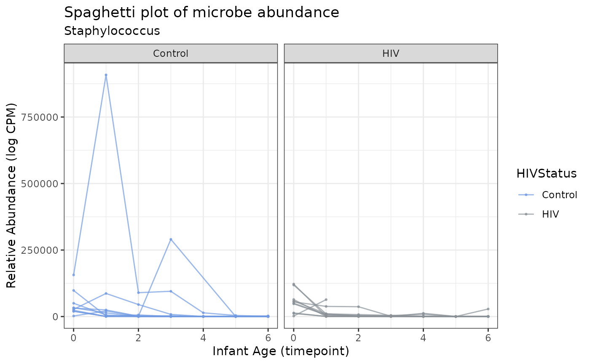
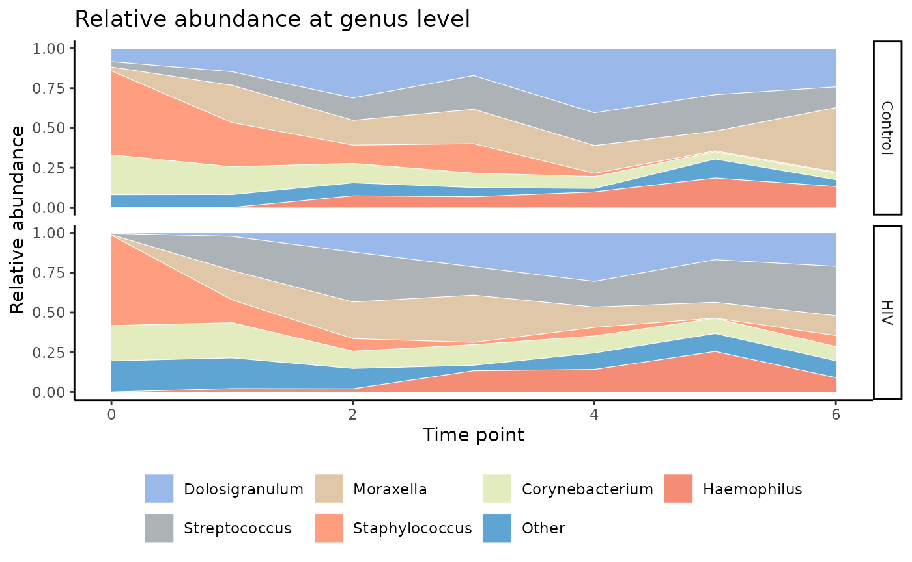

LegATo Tutorial
Aubrey R. Odom
Program in Bioinformatics, Boston University, Boston, MAaodom@bu.edu
October 30, 2024
Source:vignettes/LegATo_vignette.Rmd
LegATo_vignette.RmdIntroduction to LegATo
Streamlining longitudinal microbiome profiling in Bioconductor
Microbiome time-series data presents several distinct challenges, including complex covariate dependencies and a variety of longitudinal study designs. Furthermore, while several individual tools have been created to aid in longitudinal microbiome data analysis, an all-inclusive R-based toolkit has remained elusive.
To address these concerns, we have created LegATo (Longitudinal mEtaGenomic Analysis TOolkit). LegATo is a suite of open-source software tools for longitudinal microbiome analysis that is extendable to several different study forms, all while promising optimal ease-of-use for researchers. This toolkit will allow researchers to determine which microbial taxa are affected over time by perturbations such as onset of disease or lifestyle choices, and to predict the effects of these perturbations over time, including changes in composition or stability of commensal bacteria.
Currently, LegATo entertains a number of data cleaning, aggregation, modeling and testing procedures. As we develop or learn of new methods, we will add to the toolkit accordingly. We will soon add hierarchical clustering tools and multivariate generalized estimating equations (JGEEs) to adjust for the compositional nature of microbiome data.
Getting started with LegATo
Compatibility with MultiAssayExperiment and
SummarizedExperiment objects
The convenience of LegATo is in part credited to the integration of
MultiAssayExperiment and SummarizedExperiment
objects. These are reliable and clean data structures developed by the
as part of the MultiAssayExperiment
and SummarizedExperiment
packages.
The MultiAssayExperiment container concisely stores a
SummarizedExperiment object, which aggregates data matrices
along with annotation information, metadata, and reduced dimensionality
data (PCA, t-SNE, etc.). To learn more about proper usage and context of
these objects, you may want to take a look at the MultiAssayExperiment
package vignette and SummarizedExperiment
package vignette.
To install these two packages, run the following code:
if (!requireNamespace("BiocManager", quietly = TRUE))
install.packages("BiocManager")
BiocManager::install("MultiAssayExperiment")
BiocManager::install("SummarizedExperiment")Installation and setup
To install the development version of LegATo from Github, run the following code:
BiocManager::install("wejlab/LegATo")Now we’ll load the LegATo package into our library:
For the purposes of this vignette, we’ll also load the
ggeffects and emmeans library:
## Welcome to emmeans.
## Caution: You lose important information if you filter this package's results.
## See '? untidy'Formatting input data for use with LegATo
LegATo functions expect data properly formatted in a
MultiAssayExperiment container, with naming conventions
that are compatible with animalcules.
Obtaining properly formatted data can be achieved easily via the
create_formatted_MAE() function from the LegATo package, as
detailed below.
A note on compatibility with other packages
If you’ve analyzed your metagenomic or 16S data via the MetaScope package,
you can aggregate your sample outputs with user-input metadata using the
MetaScope::convert_animalcules() or
MetaScope::convert_animalcules_silva() functions prior to
loading your data into LegATo. These functions create a taxonomy table
and collate all data into a LegATo- and animalcules-compatible
MultiAssayExperiment object.
You can also format your data analyzed elsewhere (e.g., PathoScope
2.0 or Kraken) with the animalcules
package in the upload step with the R Shiny app, and then select
“Download Animalcules File” to obtain a MAE object that can
be used with LegATo.
Requirements for using create_formatted_MAE()
For the purposes of this example, we’ll look at some example inputs unrelated to the main HIV-E infant data:
- The
countstable is composed of raw microbial counts. There is one row for each taxon, and one column for each sample. - The
taxtable is composed of taxonomy lineages. There is one row for each taxon, and any number of columns each taxonomic level (e.g., superkingdom, genus, species). The lowest level of taxonomy serves as the rownames for the table, and is also stored in its own column. Taxonomic levels increase in granularity from left to right. - The
sampletable contains entries for each sample, with unique sample IDs on the rows. The columns are metadata for the samples, such as subjects or units on which repeated measures were taken, groupings, pairings, and covariates. rownames(counts) == rownames(tax)colnames(counts) == colnames(sample)
counts <- system.file("extdata", "counts.csv", package = "LegATo") |>
read.csv(row.names = 1) |>
dplyr::rename_with(function(x) stringr::str_replace(x, "\\.", "-"))
tax <- system.file("extdata", "tax.csv", package = "LegATo") |> read.csv(row.names = 1)
sample <- system.file("extdata", "sample.csv", package = "LegATo") |> read.csv(row.names = 1)Now we’ll look at the formatting of each:
ndim <- 5
counts[seq_len(ndim), seq_len(ndim)] |>
knitr::kable(caption = "Counts Table Preview",
label = NA)| X-1 | X-2 | X-3 | X-4 | X-5 | |
|---|---|---|---|---|---|
| Acinetobacter_beijerinckii | 430 | 18103 | 810 | 103 | 74 |
| Acinetobacter_bouvetii | 0 | 0 | 0 | 0 | 0 |
| Acinetobacter_guillouiae | 0 | 5 | 0 | 0 | 0 |
| Acinetobacter_gyllenbergii | 6 | 1 | 1 | 1 | 11 |
| Acinetobacter_indicus | 0 | 0 | 9 | 0 | 0 |
| superkingdom | phylum | class | order | family | genus | species | |
|---|---|---|---|---|---|---|---|
| Acinetobacter_beijerinckii | Bacteria | Proteobacteria | Gammaproteobacteria | Moraxellales | Moraxellaceae | Acinetobacter | Acinetobacter_beijerinckii |
| Acinetobacter_bouvetii | Bacteria | Proteobacteria | Gammaproteobacteria | Moraxellales | Moraxellaceae | Acinetobacter | Acinetobacter_bouvetii |
| Acinetobacter_guillouiae | Bacteria | Proteobacteria | Gammaproteobacteria | Moraxellales | Moraxellaceae | Acinetobacter | Acinetobacter_guillouiae |
| Acinetobacter_gyllenbergii | Bacteria | Proteobacteria | Gammaproteobacteria | Moraxellales | Moraxellaceae | Acinetobacter | Acinetobacter_gyllenbergii |
| Acinetobacter_indicus | Bacteria | Proteobacteria | Gammaproteobacteria | Moraxellales | Moraxellaceae | Acinetobacter | Acinetobacter_indicus |
| Sample | Subject | Sex | Month | Group | Pairing | HairLength | Age | |
|---|---|---|---|---|---|---|---|---|
| X-1 | X-1 | S1 | Male | 1 | A | 1 | 48.62753 | 21.9 |
| X-2 | X-2 | S2 | Male | 1 | B | 1 | 53.53195 | 67.7 |
| X-3 | X-3 | S3 | Female | 1 | A | 2 | 47.61090 | 78.9 |
| X-4 | X-4 | S4 | Female | 1 | B | 2 | 49.72870 | 48.6 |
| X-5 | X-5 | S5 | Female | 1 | A | 3 | 59.04509 | 48.4 |
Formatting your inputs with create_formatted_MAE()
Once your data are formatted correctly, you can easily use
create_formatted_MAE() like so:
output <- create_formatted_MAE(counts_dat = counts,
tax_dat = tax,
metadata_dat = sample)
class(output)## [1] "MultiAssayExperiment"
## attr(,"package")
## [1] "MultiAssayExperiment"
MultiAssayExperiment::assays(output)## List of length 1
## names(1): MicrobeGenetics
SummarizedExperiment::assays(output[["MicrobeGenetics"]])## List of length 1
## names(1): MGXIf your data is in the format of a TreeSummarizedExperiment, you can
call create_formatted_MAE(tree_SE) to create a
MAE output that is compatible with the package.
Adding information to your metadata later in your analysis
If information needs to be added to your data object at some later
point in the analysis, it is easiest to manipulate the raw data objects
(potentially via parse_MAE_SE()) and then recreate the
MAE object with create_formatted_MAE().
Example data
To illustrate the capabilities of LegATo, we will turn to a published dataset from the following paper:
Odom AR, Gill CJ, Pieciak R et al. Characterization of longitudinal nasopharyngeal microbiome patterns in maternally HIV-exposed Zambian infants [version 2; peer review: 2 approved with reservations]. Gates Open Res 2024, 6:143 (https://doi.org/10.12688/gatesopenres.14041.2)
The raw dataset is archived in Zenodo:
Zenodo: Underlying data for ‘Characterization of longitudinal nasopharyngeal microbiome patterns in maternally HIV-exposed Zambian infants’. https://doi.org/10.5281/zenodo.725531324
Further details on how the dataset was altered for inclusion in this package are provided here.
Example data context and structure
The example data consists of 167 NP swabs of healthy HIV-exposed, uninfected (HEU; n=10) infants and their HIV(+) mothers and HIV-unexposed, uninfected (HUU; n=10) infants and their HIV(-) mothers. A total of 7 samples were collected per infant, with some missingness in the data. These swabs were identified from a sample library collected in Lusaka, Zambia between 2015 and 2016.
The analysis objective is to parse the association between the NP resident bacteria and infant HIV exposure during the first 3.5 months (14 weeks) of life, a critical time in microbiome maturation.
All data was processed with PathoScope 2.0, and the
sample outputs were aggregated with the animalcules R
package.
For this analysis, we will work with the infant data only and subset the data accordingly.
dat <- system.file("extdata", "MAE.RDS", package = "LegATo") |>
readRDS()
dat_subsetted <- MultiAssayExperiment::subsetByColData(dat,
dat$MothChild == "Infant")This leaves us with 129 samples in our analysis.
Initial data exploration
MultiAssayExperiment (MAE) manipulation
LegATo has several functions for manipulating
MAE objects, delineated below:
Clean up animalcules-formatted MAEs
If your data were aggregated via the animalcules
package, as was done for the example data, the samples were aggregated
at the strain taxonomic level and have residual taxonomy IDs present.
The clean_MAE() function cleans up data suffering from
these issues.
dat_cleaned <- clean_MAE(dat_subsetted)## Registered S3 method overwritten by 'rmutil':
## method from
## print.response httrFilter MAE
Many metagenomic pipelines identify taxon abundances at extremely
small levels, which can be noisy to deal with in an analysis. The
filter_MAE function smoothly transforms reads belonging to
taxa with an overall genera threshold under the filter_prop
(filter proportion) argument, which we will set as 0.005.
dat_filt_1 <- filter_MAE(dat_cleaned, relabu_threshold = 0.05, occur_pct_cutoff = 10)## The overall range of relative abundance counts between samples is (13218, 3016276)## Number of OTUs that exhibit a relative abundance >0.05% in at least 10% of the total samples: 68/1136The filter_animalcules_MAE function utilizes the same
filtering mechanism as in the animalcules package:
dat_filt <- filter_animalcules_MAE(dat_cleaned, 0.05)Parse MAE to extract data
If you want to take a closer look at your data, you can easily
extract it into the counts, taxonomy, and sample metadata tables using
the parse_MAE_SE() function.
parsed <- parse_MAE_SE(dat_filt, which_assay = "MicrobeGenetics", type = "MAE")
parsed$counts[seq_len(5), seq_len(5)] |>
knitr::kable(caption = "Counts Table")| X1755 | X2216 | X2431 | X2561 | X2699 | |
|---|---|---|---|---|---|
| Corynebacterium accolens | 0 | 9643 | 0 | 0 | 43435 |
| Corynebacterium ammoniagenes | 0 | 0 | 0 | 0 | 0 |
| Corynebacterium appendicis | 0 | 0 | 0 | 0 | 0 |
| Corynebacterium argentoratense | 0 | 0 | 0 | 4 | 0 |
| Corynebacterium aurimucosum | 0 | 0 | 0 | 58 | 0 |
| Sample | Subject | HIVStatus | MothChild | timepoint | Age | pairing | |
|---|---|---|---|---|---|---|---|
| X1755 | X1755 | 0469-1 | Control | Infant | 0 | 7 | 1 |
| X2216 | X2216 | 0507-1 | Control | Infant | 0 | 6 | 2 |
| X2431 | X2431 | 0539-1 | Control | Infant | 0 | 9 | 3 |
| X2561 | X2561 | 0554-1 | HIV | Infant | 0 | 6 | 1 |
| X2699 | X2699 | 0620-1 | HIV | Infant | 0 | 4 | 2 |
| superkingdom | phylum | class | order | family | genus | species | |
|---|---|---|---|---|---|---|---|
| Corynebacterium accolens | Bacteria | Actinobacteria | Actinomycetia | Corynebacteriales | Corynebacteriaceae | Corynebacterium | Corynebacterium accolens |
| Corynebacterium ammoniagenes | Bacteria | Actinobacteria | Actinomycetia | Corynebacteriales | Corynebacteriaceae | Corynebacterium | Corynebacterium ammoniagenes |
| Corynebacterium appendicis | Bacteria | Actinobacteria | Actinomycetia | Corynebacteriales | Corynebacteriaceae | Corynebacterium | Corynebacterium appendicis |
| Corynebacterium argentoratense | Bacteria | Actinobacteria | Actinomycetia | Corynebacteriales | Corynebacteriaceae | Corynebacterium | Corynebacterium argentoratense |
| Corynebacterium aurimucosum | Bacteria | Actinobacteria | Actinomycetia | Corynebacteriales | Corynebacteriaceae | Corynebacterium | Corynebacterium aurimucosum |
Summarizing microbial counts data
It is fairly convenient to summarize the average number of reads for
a report with get_summary_table(). The table groups by
user-provided discrete covariates.
group_vars <- c("HIVStatus", "MothChild")
get_summary_table(dat_filt, group_vars) |>
knitr::kable(caption = "Summary Table", label = NA)| HIVStatus | MothChild | mean_reads | sd_reads | min_reads | max_reads | num_total |
|---|---|---|---|---|---|---|
| Control | Infant | 156209.2 | 408000.52 | 24176 | 3016276 | 68 |
| HIV | Infant | 90008.2 | 51395.08 | 13218 | 202079 | 61 |
The get_top_taxa function outputs a
data.frame that lists taxa in order of relative
abundance.
best_genus <- get_top_taxa(dat_filt, "genus")
best_genus |> knitr::kable(caption = "Table of genera, ranked by abundance")| taxon | allmeans |
|---|---|
| Dolosigranulum | 0.1892754 |
| Streptococcus | 0.1730879 |
| Moraxella | 0.1713469 |
| Staphylococcus | 0.1554891 |
| Corynebacterium | 0.1290279 |
| Other | 0.0979779 |
| Haemophilus | 0.0837949 |
Other data manipulation functions
If you want to conduct your own analyses, the
get_long_data() function will prove convenient. The
get_stacked_data() function can be used for certain
visualizations that utilize a relative abundance aggregation
approach.
longdat <- get_long_data(dat_filt, "genus", log = TRUE, counts_to_CPM = TRUE)
stackeddat <- get_stacked_data(dat_filt, "genus", covariate_1 = "HIVStatus",
covariate_time = "timepoint")Visualizing Data
There are several plots by which we can visualize changes in relative abundance over time, accounting for a given covariate. In this case, we are interested in HIV exposure.
We’ll select a palette using paletteer.
this_palette <- c("#709AE1", "#8A9197", "#D2AF81", "#FD7446", "#D5E4A2", "#197EC0", "#F05C3B", "#46732E",
"#71D0F5", "#370335", "#075149", "#C80813", "#91331F", "#1A9993", "#FD8CC1") |>
magrittr::extract(seq_len(nrow(best_genus)))Alluvial plots
Alluvial diagrams illustrate individual taxa as stream fields that
change position at different time points. The height of a stream field
represents the relative abundance of that taxon. At a given time point,
stream fields are ranked from the highest to lowest abundance (top to
bottom). These can be constructed with plot_alluvial().
plot_alluvial(dat = dat_filt,
taxon_level = "genus",
covariate_1 = "HIVStatus",
covariate_time = "timepoint",
palette_input = this_palette,
subtitle = "Alluvial plot")
In context, this plot indicates a high abundance of Staphylococcus in both the control and HIV-E infants in the first two weeks of life, but other genera quickly overtake Staphylococcus in dominance as shown by the changing rank of the streams for each time point. Overall, Streptococcus seems to have a far greater presence in the HIV-E infants’ nasopharyngeal microbiota
Spaghetti plots
We can create spaghetti or volatility plots to elucidate changes over
time on a sample level for a given taxon. This is advantageous as other
visualization methods are often aggregates of multiple samples and lack
granularity. These plots can be created with
plot_spaghetti().
plot_spaghetti(dat = dat_filt,
covariate_time = "timepoint",
covariate_1 = "HIVStatus",
unit_var = "Subject",
taxon_level = "genus",
which_taxon = "Staphylococcus",
palette_input = this_palette,
title = "Spaghetti Plot",
subtitle = NULL) +
ggplot2::xlab("Infant Age (timepoint)") +
ggplot2::ylab("Relative Abundance (log CPM)")
Here we plot changes in the Staphylococcus log counts per million (CPM) across time points. The spaghetti plot format clues us into the few outlier infants in the control group that seem to have extremely high counts in the first few weeks of life.
Stacked bar plots
Stacked bar plots are used here to visualize the relative abundance
of microbes at a given taxonomic level in each sample, represented as a
single bar, labeled by time point, and plotted within each HIV exposure
status group for separate mothers and infant comparisons. Use
plot_stacked_bar.
plot_stacked_bar(dat_filt, "genus",
"HIVStatus",
"timepoint",
palette_input = this_palette)We see from the stacked bar plots that many of the microbes seem to maintain similar trends in both control and HIV-E infants over time, with Streptococcus producing slightly higher abundances in the HIV-E group.
Stacked area charts
Stacked area charts are similar to stacked bar plots, but provide for
continuity between time points. These are created with
plot_stacked_area().
plot_stacked_area(dat_filt, "genus",
"HIVStatus",
"timepoint",
palette_input = this_palette)
The stacked area chart is offers a similar method of visualizing the data.
Heatmaps
With plot_heatmap, you can plot a heatmap of a specific
microbe to determine changes along one or more covariates.
this_taxon <- parsed$counts |>
animalcules::upsample_counts(parsed$tax, "genus") |>
animalcules::counts_to_logcpm()
p <- plot_heatmap(inputData = this_taxon,
annotationData = dplyr::select(parsed$sam, "timepoint", "HIVStatus", "pairing"),
name = "Data",
plot_title = "Example",
plottingColNames = NULL,
annotationColNames = NULL,
colList = list(),
scale = FALSE,
showColumnNames = FALSE,
showRowNames = FALSE,
colorSets = c("Set1", "Set2", "Set3", "Pastel1", "Pastel2", "Accent", "Dark2",
"Paired"),
choose_color = c("blue", "gray95", "red"),
split_heatmap = "none",
column_order = NULL
)## Warning: The input is a data frame-like object, convert it to a matrix.From the heatmap, we find that clustering does not seem to find a clear relationship between genera (on the rows) and samples (on the columns). Three annotations were plotted on the top bar: time point, HIV status, and pairing.
Longitudinal data analysis
For a concrete analysis of longitudinal microbiome data,
LegATo provides NMIT, both a paired and unpaired
multivariate Hotelling’s T-squared test, generalized estimating
equations (GEEs) and linear mixed effects models (LMEMs/LMMs).
A brief overview of each method is provided below.
Nonparametric microbial interdependence test (NMIT)
NMIT is a multivariate distance-based test intended to evaluate the association between key phenotypic variables and microbial interdependence. The test determines longitudinal sample similarity as a function of temporal microbial composition.
The authors thank Yilong Zhang for providing his code for adaptation into LegATo.
Citations:
Yilong Zhang, Sung Won Han, Laura M Cox, and Huilin Li. A multivariate distance-based analytic framework for microbial interdependence association test in longitudinal study. Genetic epidemiology, 41(8):769–778, 2017. doi:10.1002/gepi.22065.
dat_1 <- filter_MAE(dat_cleaned, 0.05, 10, "species")## The overall range of relative abundance counts between samples is (13218, 3016276)## Number of OTUs that exhibit a relative abundance >0.05% in at least 10% of the total samples: 46/1136
NMIT(dat_1, unit_var = "Subject", fixed_cov = "HIVStatus",
covariate_time = "timepoint",
method = "kendall", dist_type = "F",
heatmap = TRUE, classify = FALSE, fill_na = 0)## Warning in stats::cor(x = df, y, method = method): the standard deviation is
## zero## NULLHotelling’s T^2 Test
Hotelling’s T2 tests can be used to determine whether the microbiome profiles exhibit notable differences or trends across time and groups. We may then use t-tests to identify which genera contributed most to these differences.
For this example, HEU and HUU infants are designated as the two sampling units on which the relative abundances of the p most abundant genera will be measured.
For paired tests, we chose p = 6 variables to ensure that n < p so that singularity could be avoided and T2 could be properly computed, where n is the number of measurements in a sampling unit. Normality is met by using microbe abundances in log CPM units, which is calculated within the function.
test_hotelling_t2(dat = dat_1,
test_index = which(dat_filt$MothChild == "Infant" &
dat_filt$timepoint == 6),
taxon_level = "genus",
num_taxa = 6,
paired = TRUE,
grouping_var = "HIVStatus",
pairing_var = "pairing")## $df1
## [1] 6
##
## $df2
## [1] 2
##
## $crit_F
## [1] 19.32953
##
## $F_stat
## [1] 2.665069
##
## $pvalue
## [1] 0.2978084Group comparisons can also be tested on unpaired data:
test_hotelling_t2(dat = dat_1,
test_index = which(dat_filt$timepoint == 0),
taxon_level = "genus",
num_taxa = 6,
grouping_var = "HIVStatus",
unit_var = "Subject",
paired = FALSE)## $df1
## [1] 6
##
## $df2
## [1] 13
##
## $crit_F
## [1] 2.915269
##
## $F_stat
## [1] 0.7611613
##
## $pvalue
## [1] 0.6127997Modeling
Generalized Estimating Equations (GEEs)
Generalized estimating equations (GEEs) as described in Liang and Zeger (1986) and extended by Agresti (2002) have been widely used for modeling longitudinal data, and more recently for longitudinal microbiome data.
For each genus present in the microbial aggregate of samples, we model normalized log CPM relative taxon counts, estimating the effects of time point and HIV exposure status and their interaction, while accounting for the underlying structure of clusters formed by individual subjects.
output <- run_gee_model(dat_1, unit_var = "Subject",
fixed_cov = c("HIVStatus", "timepoint"),
corstr = "ar1",
plot_out = FALSE,
plotsave_loc = ".",
plot_terms = NULL)
head(output) |> knitr::kable(caption = "GEE Outputs")| Coefficient | Coefficient Estimate | Standard Error | Statistic | Unadj p-value | Lower 95% CI | Upper 95% CI | Taxon | Adj p-value |
|---|---|---|---|---|---|---|---|---|
| (Intercept) | 54987.56051 | 45931.419 | 1.4332079 | 0.2312416 | -35036.366 | 145011.487 | Dolosigranulum | 0.2654996 |
| (Intercept) | 4566.07283 | 3252.186 | 1.9712188 | 0.1603186 | -1808.095 | 10940.241 | Streptococcus | 0.2471246 |
| (Intercept) | 10783.40922 | 4927.862 | 4.7884507 | 0.0286512 | 1124.976 | 20441.842 | Moraxella | 0.1637734 |
| (Intercept) | 59258.78618 | 26143.122 | 5.1379585 | 0.0234082 | 8019.208 | 110498.365 | Staphylococcus | 0.1637734 |
| (Intercept) | 46202.05734 | 20777.660 | 4.9445795 | 0.0261726 | 5478.592 | 86925.522 | Corynebacterium | 0.1637734 |
| (Intercept) | 54.48054 | 1827.981 | 0.0008883 | 0.9762236 | -3528.297 | 3637.258 | Haemophilus | 0.9762236 |
You can also create plots of the covariates, which will be saved to a folder specified by the user:
## Warning: Some of the focal terms are of type `character`. This may lead to
## unexpected results. It is recommended to convert these variables to
## factors before fitting the model.
## The following variables in are of type character: `HIVStatus`
## Warning: Some of the focal terms are of type `character`. This may lead to
## unexpected results. It is recommended to convert these variables to
## factors before fitting the model.
## The following variables in are of type character: `HIVStatus`
## Warning: Some of the focal terms are of type `character`. This may lead to
## unexpected results. It is recommended to convert these variables to
## factors before fitting the model.
## The following variables in are of type character: `HIVStatus`
## Warning: Some of the focal terms are of type `character`. This may lead to
## unexpected results. It is recommended to convert these variables to
## factors before fitting the model.
## The following variables in are of type character: `HIVStatus`
## Warning: Some of the focal terms are of type `character`. This may lead to
## unexpected results. It is recommended to convert these variables to
## factors before fitting the model.
## The following variables in are of type character: `HIVStatus`
## Warning: Some of the focal terms are of type `character`. This may lead to
## unexpected results. It is recommended to convert these variables to
## factors before fitting the model.
## The following variables in are of type character: `HIVStatus`
## Warning: Some of the focal terms are of type `character`. This may lead to
## unexpected results. It is recommended to convert these variables to
## factors before fitting the model.
## The following variables in are of type character: `HIVStatus`
## Warning: Some of the focal terms are of type `character`. This may lead to
## unexpected results. It is recommended to convert these variables to
## factors before fitting the model.
## The following variables in are of type character: `HIVStatus`
## Warning: Some of the focal terms are of type `character`. This may lead to
## unexpected results. It is recommended to convert these variables to
## factors before fitting the model.
## The following variables in are of type character: `HIVStatus`
## Warning: Some of the focal terms are of type `character`. This may lead to
## unexpected results. It is recommended to convert these variables to
## factors before fitting the model.
## The following variables in are of type character: `HIVStatus`
## Warning: Some of the focal terms are of type `character`. This may lead to
## unexpected results. It is recommended to convert these variables to
## factors before fitting the model.
## The following variables in are of type character: `HIVStatus`
## Warning: Some of the focal terms are of type `character`. This may lead to
## unexpected results. It is recommended to convert these variables to
## factors before fitting the model.
## The following variables in are of type character: `HIVStatus`
## Warning: Some of the focal terms are of type `character`. This may lead to
## unexpected results. It is recommended to convert these variables to
## factors before fitting the model.
## The following variables in are of type character: `HIVStatus`
## Warning: Some of the focal terms are of type `character`. This may lead to
## unexpected results. It is recommended to convert these variables to
## factors before fitting the model.
## The following variables in are of type character: `HIVStatus`
## Warning: Some of the focal terms are of type `character`. This may lead to
## unexpected results. It is recommended to convert these variables to
## factors before fitting the model.
## The following variables in are of type character: `HIVStatus`
## Warning: Some of the focal terms are of type `character`. This may lead to
## unexpected results. It is recommended to convert these variables to
## factors before fitting the model.
## The following variables in are of type character: `HIVStatus`
## Warning: Some of the focal terms are of type `character`. This may lead to
## unexpected results. It is recommended to convert these variables to
## factors before fitting the model.
## The following variables in are of type character: `HIVStatus`
## Warning: Some of the focal terms are of type `character`. This may lead to
## unexpected results. It is recommended to convert these variables to
## factors before fitting the model.
## The following variables in are of type character: `HIVStatus`
## Warning: Some of the focal terms are of type `character`. This may lead to
## unexpected results. It is recommended to convert these variables to
## factors before fitting the model.
## The following variables in are of type character: `HIVStatus`
## Warning: Some of the focal terms are of type `character`. This may lead to
## unexpected results. It is recommended to convert these variables to
## factors before fitting the model.
## The following variables in are of type character: `HIVStatus`
## Warning: Some of the focal terms are of type `character`. This may lead to
## unexpected results. It is recommended to convert these variables to
## factors before fitting the model.
## The following variables in are of type character: `HIVStatus`
## Warning: Some of the focal terms are of type `character`. This may lead to
## unexpected results. It is recommended to convert these variables to
## factors before fitting the model.
## The following variables in are of type character: `HIVStatus`
## Warning: Some of the focal terms are of type `character`. This may lead to
## unexpected results. It is recommended to convert these variables to
## factors before fitting the model.
## The following variables in are of type character: `HIVStatus`
## Warning: Some of the focal terms are of type `character`. This may lead to
## unexpected results. It is recommended to convert these variables to
## factors before fitting the model.
## The following variables in are of type character: `HIVStatus`
## Warning: Some of the focal terms are of type `character`. This may lead to
## unexpected results. It is recommended to convert these variables to
## factors before fitting the model.
## The following variables in are of type character: `HIVStatus`
## Warning: Some of the focal terms are of type `character`. This may lead to
## unexpected results. It is recommended to convert these variables to
## factors before fitting the model.
## The following variables in are of type character: `HIVStatus`
## Warning: Some of the focal terms are of type `character`. This may lead to
## unexpected results. It is recommended to convert these variables to
## factors before fitting the model.
## The following variables in are of type character: `HIVStatus`
## Warning: Some of the focal terms are of type `character`. This may lead to
## unexpected results. It is recommended to convert these variables to
## factors before fitting the model.
## The following variables in are of type character: `HIVStatus`
## Warning: Some of the focal terms are of type `character`. This may lead to
## unexpected results. It is recommended to convert these variables to
## factors before fitting the model.
## The following variables in are of type character: `HIVStatus`
## Warning: Some of the focal terms are of type `character`. This may lead to
## unexpected results. It is recommended to convert these variables to
## factors before fitting the model.
## The following variables in are of type character: `HIVStatus`
## Warning: Some of the focal terms are of type `character`. This may lead to
## unexpected results. It is recommended to convert these variables to
## factors before fitting the model.
## The following variables in are of type character: `HIVStatus`## [1] "Abiotrophia_HIVStatus.png" "Abiotrophia_timepoint.png"
## [3] "Acinetobacter_HIVStatus.png" "Acinetobacter_timepoint.png"
## [5] "Aeromonas_HIVStatus.png" "Aeromonas_timepoint.png"Linear Mixed Models
Similarly, you can also run linear mixed-effects models:
# If there are issues with matrix being positive definite
# Revisit filtering parameters in filter_MAE
output <- run_lmm_model(dat_1, unit_var = "Subject",
taxon_level = "genus",
fixed_cov = c("timepoint", "HIVStatus"),
plot_out = FALSE,
plotsave_loc = ".",
plot_terms = NULL)## boundary (singular) fit: see help('isSingular')
## boundary (singular) fit: see help('isSingular')
## boundary (singular) fit: see help('isSingular')| effect | Coefficient | Coefficient Estimate | Standard Error | Statistic | df | Unadj p-value | Taxon | Adj p-value |
|---|---|---|---|---|---|---|---|---|
| fixed | (Intercept) | 54874.112 | 36388.018 | 1.508027 | 60.58909 | 0.1367446 | Dolosigranulum | 0.2355046 |
| fixed | (Intercept) | 5092.576 | 4968.070 | 1.025061 | 38.93384 | 0.3116612 | Streptococcus | 0.4255877 |
| fixed | (Intercept) | 10777.412 | 5787.774 | 1.862100 | 25.88220 | 0.0739801 | Moraxella | 0.1638130 |
| fixed | (Intercept) | 60473.055 | 16671.751 | 3.627277 | 45.00978 | 0.0007276 | Staphylococcus | 0.0225553 |
| fixed | (Intercept) | 45165.789 | 14562.693 | 3.101472 | 62.53418 | 0.0028879 | Corynebacterium | 0.0288040 |
| fixed | (Intercept) | -1417.599 | 4277.273 | -0.331426 | 34.20857 | 0.7423446 | Haemophilus | 0.7935408 |
Session Info
## R version 4.4.0 (2024-04-24)
## Platform: x86_64-pc-linux-gnu
## Running under: AlmaLinux 8.10 (Cerulean Leopard)
##
## Matrix products: default
## BLAS/LAPACK: FlexiBLAS NETLIB; LAPACK version 3.11.0
##
## locale:
## [1] LC_CTYPE=en_US.UTF-8 LC_NUMERIC=C
## [3] LC_TIME=en_US.UTF-8 LC_COLLATE=en_US.UTF-8
## [5] LC_MONETARY=en_US.UTF-8 LC_MESSAGES=en_US.UTF-8
## [7] LC_PAPER=en_US.UTF-8 LC_NAME=C
## [9] LC_ADDRESS=C LC_TELEPHONE=C
## [11] LC_MEASUREMENT=en_US.UTF-8 LC_IDENTIFICATION=C
##
## time zone: America/New_York
## tzcode source: system (glibc)
##
## attached base packages:
## [1] stats graphics grDevices utils datasets methods base
##
## other attached packages:
## [1] emmeans_1.10.3 ggeffects_1.7.0 LegATo_1.1.0
##
## loaded via a namespace (and not attached):
## [1] splines_4.4.0 tibble_3.2.1
## [3] datawizard_0.12.3 polyclip_1.10-6
## [5] XML_3.99-0.17 rpart_4.1.23
## [7] rex_1.2.1 lifecycle_1.0.4
## [9] edgeR_4.2.0 doParallel_1.0.17
## [11] globals_0.16.3 lattice_0.22-6
## [13] MASS_7.3-60.2 insight_0.20.3
## [15] MultiAssayExperiment_1.30.3 backports_1.5.0
## [17] magrittr_2.0.3 limma_3.60.0
## [19] plotly_4.10.4 sass_0.4.9
## [21] rmarkdown_2.28 jquerylib_0.1.4
## [23] yaml_2.3.10 askpass_1.2.1
## [25] reticulate_1.38.0 minqa_1.2.8
## [27] RColorBrewer_1.1-3 multcomp_1.4-25
## [29] abind_1.4-8 zlibbioc_1.50.0
## [31] GenomicRanges_1.56.1 purrr_1.0.2
## [33] BiocGenerics_0.50.0 TH.data_1.1-2
## [35] tweenr_2.0.3 sandwich_3.1-0
## [37] circlize_0.4.16 GenomeInfoDbData_1.2.12
## [39] IRanges_2.38.1 S4Vectors_0.42.1
## [41] ggrepel_0.9.5 rmutil_1.1.10
## [43] inline_0.3.19 listenv_0.9.1
## [45] rentrez_1.2.3 vegan_2.6-6.1
## [47] BiocStyle_2.32.1 umap_0.2.10.0
## [49] RSpectra_0.16-1 spatial_7.3-17
## [51] parallelly_1.38.0 pkgdown_2.0.9
## [53] permute_0.9-7 codetools_0.2-20
## [55] DelayedArray_0.30.1 DT_0.33
## [57] ggforce_0.4.2 tidyselect_1.2.1
## [59] shape_1.4.6.1 UCSC.utils_1.0.0
## [61] farver_2.1.2 lme4_1.1-35.3
## [63] stable_1.1.6 broom.mixed_0.2.9.5
## [65] matrixStats_1.4.1 stats4_4.4.0
## [67] jsonlite_1.8.9 GetoptLong_1.0.5
## [69] ggalluvial_0.12.5 survival_3.6-4
## [71] iterators_1.0.14 systemfonts_1.0.6
## [73] foreach_1.5.2 tools_4.4.0
## [75] ragg_1.3.0 Rcpp_1.0.13
## [77] glue_1.8.0 SparseArray_1.4.8
## [79] BiocBaseUtils_1.6.0 xfun_0.45
## [81] mgcv_1.9-1 DESeq2_1.44.0
## [83] MatrixGenerics_1.16.0 GenomeInfoDb_1.40.1
## [85] dplyr_1.1.4 numDeriv_2016.8-1.1
## [87] withr_3.0.1 BiocManager_1.30.22
## [89] timeSeries_4032.109 fastmap_1.2.0
## [91] boot_1.3-30 fansi_1.0.6
## [93] shinyjs_2.1.0 openssl_2.2.1
## [95] animalcules_1.20.0 digest_0.6.37
## [97] R6_2.5.1 estimability_1.5.1
## [99] textshaping_0.3.7 colorspace_2.1-1
## [101] Cairo_1.6-2 modeest_2.4.0
## [103] utf8_1.2.4 tidyr_1.3.1
## [105] generics_0.1.3 data.table_1.16.0
## [107] httr_1.4.7 htmlwidgets_1.6.4
## [109] S4Arrays_1.4.1 pkgconfig_2.0.3
## [111] gtable_0.3.5 tsne_0.1-3.1
## [113] timeDate_4032.109 ComplexHeatmap_2.20.0
## [115] covr_3.6.4 XVector_0.44.0
## [117] furrr_0.3.1 htmltools_0.5.8.1
## [119] clue_0.3-65 scales_1.3.0
## [121] Biobase_2.64.0 png_0.1-8
## [123] knitr_1.48 rstudioapi_0.16.0
## [125] reshape2_1.4.4 rjson_0.2.22
## [127] nloptr_2.1.1 statip_0.2.3
## [129] coda_0.19-4.1 nlme_3.1-164
## [131] cachem_1.1.0 zoo_1.8-12
## [133] GlobalOptions_0.1.2 sjlabelled_1.2.0
## [135] stringr_1.5.1 parallel_4.4.0
## [137] fBasics_4032.96 desc_1.4.3
## [139] pillar_1.9.0 grid_4.4.0
## [141] vctrs_0.6.5 xtable_1.8-4
## [143] cluster_2.1.6 evaluate_1.0.0
## [145] magick_2.8.3 mvtnorm_1.2-6
## [147] cli_3.6.3 locfit_1.5-9.10
## [149] compiler_4.4.0 rlang_1.1.4
## [151] crayon_1.5.3 labeling_0.4.3
## [153] plyr_1.8.9 forcats_1.0.0
## [155] fs_1.6.4 stringi_1.8.4
## [157] viridisLite_0.4.2 BiocParallel_1.38.0
## [159] TBSignatureProfiler_1.17.0 assertthat_0.2.1
## [161] lmerTest_3.1-3 munsell_0.5.1
## [163] lazyeval_0.2.2 geepack_1.3.10
## [165] Matrix_1.7-0 hms_1.1.3
## [167] stabledist_0.7-1 future_1.34.0
## [169] ggplot2_3.5.1 statmod_1.5.0
## [171] haven_2.5.4 SummarizedExperiment_1.34.0
## [173] highr_0.11 GUniFrac_1.8
## [175] broom_1.0.6 memoise_2.0.1
## [177] bslib_0.8.0 ape_5.8